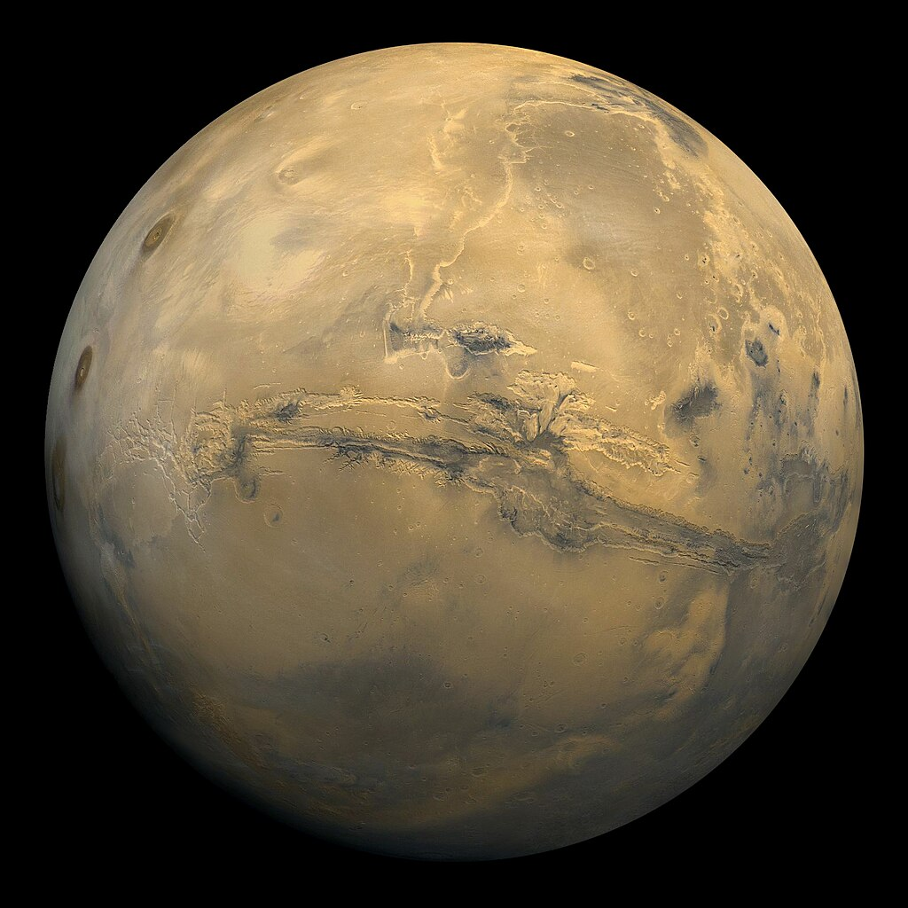
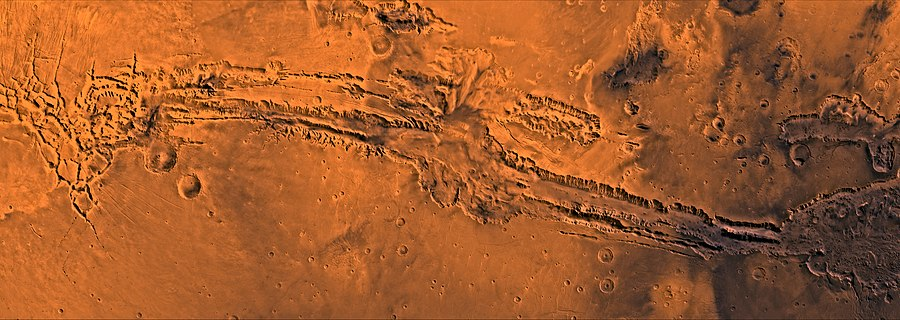
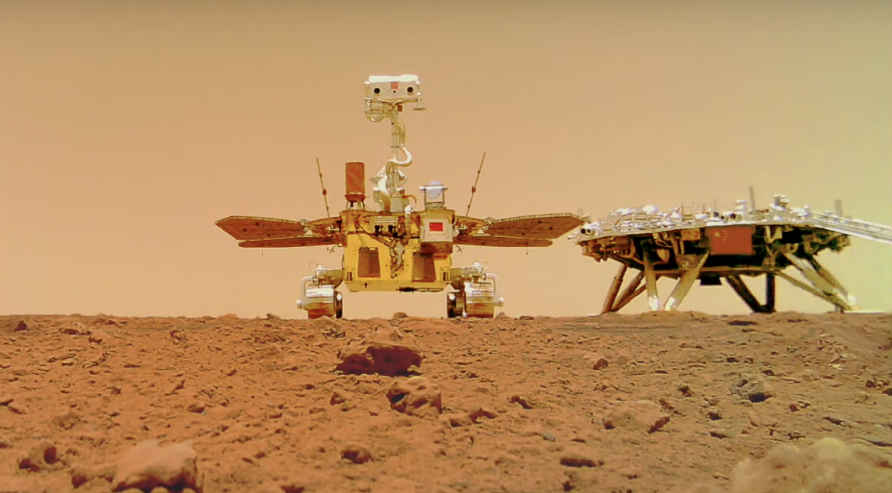
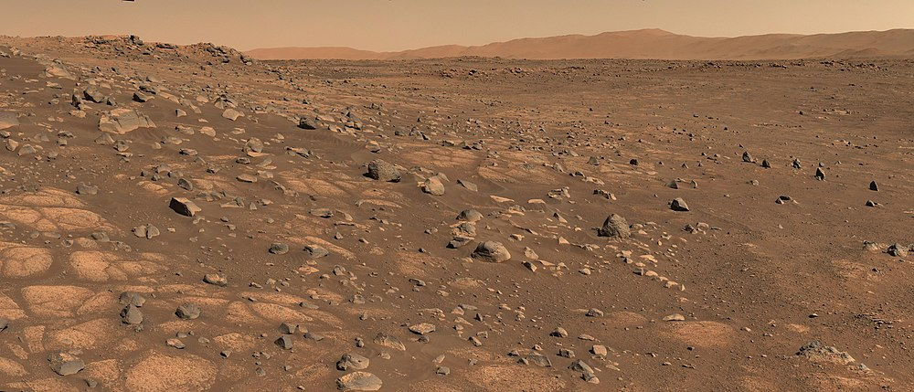
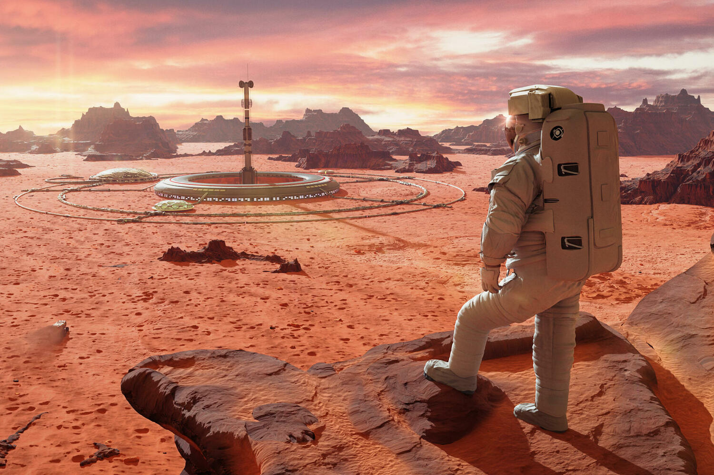

Mars
Mars is the fourth planet from the Sun and the seventh largest planet in the Solar System; its mass is 10.7% of Earth's. Named after Mars, the ancient Roman god of war, corresponding to the ancient Greek Ares. Mars is also called the Red Planet due to its reddish surface color, which is imparted by the mineral hematite — γ-iron(III) oxide.
Mars is a terrestrial planet with a thin atmosphere (surface pressure is 160 times less than that of Earth). Surface features of Mars include impact craters resembling lunar ones, as well as volcanoes, valleys, deserts, and polar ice caps similar to Earth's.
Mars has two natural satellites — Phobos and Deimos (translated from ancient Greek as "fear" and "terror," the names of two sons of Ares who accompanied him in battle), which are relatively small (Phobos — 26.8×22.4×18.4 km, Deimos — 15×12.2×10.4 km) and have irregular shapes.
Astronomical Characteristics
The minimum distance from Mars to Earth is 55.76 million km (when Earth is precisely between the Sun and Mars), and the maximum is 401 million km (when the Sun is precisely between Earth and Mars). The average distance from Mars to the Sun is 228 million km (1.52 astronomical units), and the orbital period around the Sun is 687 Earth days. Mars' orbit has a noticeable eccentricity (0.0934), so the distance to the Sun varies from 206.6 to 249.2 million km. The inclination of Mars' orbit to the plane of the ecliptic is 1.85°. Mars is almost half the size of Earth in linear dimension. Its equatorial radius is estimated to be 3396.9 ± 0.4 km, or 3396.2 ± 0.1 km (53.2% of Earth's).
The rotation period of the planet is close to Earth's - 24 hours 37 minutes 22.7 seconds (with respect to the stars), the length of the average Martian solar day is 24 hours 39 minutes 35.24409 seconds, which is only 2.7% longer than Earth's day. For convenience, the Martian day is called a "sol." The Martian year equals 668.59 sols, which is 686.98 Earth days.
The gravity near the surface of Mars is 39.4% of Earth's (2.5 times weaker). Since it is unknown whether this gravitational force is sufficient to avoid long-term health problems, options are being considered for creating artificial gravity through heavy suits or centrifuges that provide similar loads to Earth's skeleton for long stays on Mars.
Exploration of Mars
The systematic exploration of Mars has utilized the capabilities of the Hubble Space Telescope, obtaining photographs of Mars with the highest resolution ever taken from Earth.
Exploration of Mars by spacecraft has been a key part of our understanding of the planet. Starting from the first Mariner missions in the 1960s, the exploration of Mars has been one of the main directions of space exploration. Soviet missions such as the Mars and Phobos programs made significant contributions to the study of the planet, including the first soft landings on the surface. American missions, from Viking to the current Perseverance and Ingenuity missions, also play a crucial role in expanding our knowledge of Mars. Orbital missions such as Mars Odyssey, Mars Express, and MAVEN continue to collect data on Mars' climate, atmosphere, and surface. Surface missions such as Curiosity and Zhurong conduct on-site research and investigate the geology and chemistry of the planet. Together, these efforts contribute to a comprehensive picture of Mars exploration that continues to evolve with each new spacecraft and mission.
Colonization of Mars
The proximity of Mars and its relative similarity to Earth have sparked a series of futuristic projects for terraforming and colonizing Mars by humans in the future.
The Mars rover Curiosity discovered two sources of organic molecules on the surface of Mars. In addition to a short-term increase in methane content in the atmosphere, the rover detected the presence of carbon compounds in a powdered sample left from drilling Martian rock. The first discovery allowed the onboard instrument SAM to be used. Over 20 months, it measured the composition of the Martian atmosphere 12 times. On two occasions — at the end of 2013 and the beginning of 2014 — Curiosity managed to detect a tenfold increase in the average methane content. This spike, according to members of the rover's scientific team, indicates the detection of a local methane source. Whether it has a biological or other origin, experts cannot confirm due to insufficient data for a full analysis.